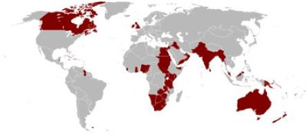

-

The Rise and Fall of the British Empire
The British empire was an extensive system of colonies that extended from the Nordic regions of Canada in North America to the Indian subcontinent in Asia. As a result of its global dominance, the United Kingdom earned the nickname "the empire on which the sun never sets." The colonization of various regions of North America, particularly the Virginia colony in 1607, marked the beginning of the empire. The empire grew throughout time to include regions including the Caribbean, Africa, Asia, and Australia. The empire's rate of growth peaked in the 18th and 19th centuries. It ruled over sections of Africa, Asia, and the regions of Canada and India. One of the most powerful empires in history, the British Empire once controlled a quarter of the world's landmass and population. The enslaved and exploited inhabitants of the territories they conquered, many of whom were compelled to work for the colonists, were the basis of this worldwide dominance. Since then, other conquered nations have proclaimed their independence, ending the British empire. 65 nations commemorate their liberation from the British Empire.